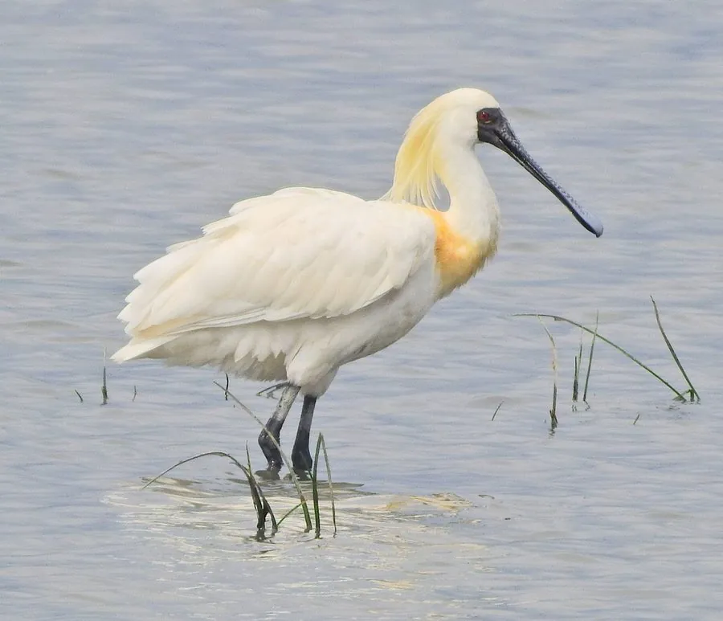

鸟类 · 动物界
黑脸琵鹭 Platalea minor

全球最濒危的琵鹭，全身雪白而脸部裸露皮肤为黑色，喙如琵琶，在朝鲜半岛外小岛繁殖、中国南方越冬。
- 分类
- 门脊索动物门纲鸟纲目鹈形目科鹮科属琵鹭属
- 栖息环境
- 沿海滩涂、河口、鱼塘与浅水沼泽，繁殖期选择无人小岛
- 地理分布
- 繁殖于朝鲜半岛西海岸及中国辽东半岛，越冬于中国南方沿海、台湾和越南
- 保护级别
- IUCN 濒危（EN）；中国国家一级保护动物
物种志
黑脸琵鹭体长 60–79 cm，体重约 1.2 kg，翼展约 110 cm。全身羽毛雪白，喙长而扁平、末端膨大呈琵琶状，呈黑色，脸部裸露的皮肤也是黑色，与白色羽毛形成鲜明对比，因此得名。它的喙和腿均为黑色，站立时颈部弯曲，姿态沉静。
黑脸琵鹭繁殖于朝鲜半岛西海岸外的小岛和中国辽东半岛，越冬于中国南方沿海、台湾、香港及越南等地，是全球最濒危的涉禽之一。它们栖息在沿海滩涂、河口和鱼塘，靠左右扫动喙部滤食小鱼、虾和昆虫。繁殖期在岩石小岛或树上集群营巢，每窝产卵 4–6 枚，孵化约 26 天。由于栖息地减少和污染，全球种群仅数千只，被列为濒危物种和中国国家一级保护动物。
形态与习性
- 食性小鱼、虾、昆虫和甲壳类，用扫动的喙滤食
- 体长60–79 cm
- 体重约 1.2 kg
- 翼展约 110 cm
- 繁殖每窝 4–6 枚卵，孵化约 26 天
- 寿命野外约 10–15 年
- 种群全球仅数千只，是数量最少的琵鹭
趣味知识
- 黑脸琵鹭曾一度被认为全球不足 300 只，经多年保护，种群已恢复到数千只。
- 它的脸和喙都是黑色，像戴着一张黑色的面具。
- 黑脸琵鹭越冬时喜欢成群在鱼塘和滩涂上觅食。
- 繁殖期它们会在小岛上集群营巢，雏鸟出壳后由双亲共同喂养。